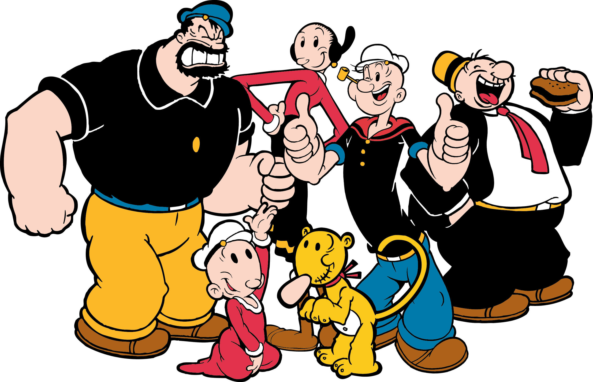

About Popeye
Popeye is fantastic! He's a wisecracking sailor man and gets superhuman strength when he downs a can of spinach.
Popeye and his friends
Popeye's Characteristics
- He's got a squinty eye.
- He's got bulging forearms.
- He never shies away from a fight.
Popeye's Friends
Popeye has some great friends. Out of them all, Popeye's in love with Olive Oyl. She's nice. Click on the links below to read more about them: